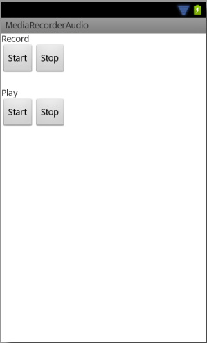

В этом уроке:
- пишем звук с помощью MediaRecorder
Воспроизводить звук мы научились, теперь попробуем его записать. Для этого можно использовать MediaRecorder. Этот же класс используется и для записи видео, но об этом поговорим в следующих уроках. Пока нас интересует звук.
Чтобы MediaRecorder записал для вас звук, он должен знать:
- источник звука
- формат записи
- аудио-кодек
- имя файла
Если вкратце, то кодек – это способ сжатия данных. А под форматом, я так понимаю, здесь подразумевается контейнер, т.е. способ хранения. Я не буду углубляться в эти вопросы, т.к. не являюсь специалистом. В инете сейчас очень много статей на эту тему.
В документацие есть пример, в котором используется кодек AMR-NB и формат 3GPP. Их я и буду использовать в своем примере.
Напишем простое приложение, которое будет записывать звук с микрофона и даст возможность прослушать то, что записали.
Создадим проект:
Project name: P1291_MediaRecorderAudio
Build Target: Android 4.0
Application name: MediaRecorderAudio
Package name: ru.startandroid.develop.p1291mediarecorderaudio
Create Activity: MainActivity
Добавим строки в strings.xml:
<string name="record">Record</string>
<string name="play">Play</string>
<string name="start">Start</string>
<string name="stop">Stop</string>
Рисуем экран main.xml:
<?xml version="1.0" encoding="utf-8"?>
<LinearLayout
xmlns:android="http://schemas.android.com/apk/res/android"
xmlns:tools="http://schemas.android.com/tools"
android:layout_width="match_parent"
android:layout_height="match_parent"
android:orientation="vertical"
tools:context=".MainActivity">
<TextView
android:layout_width="wrap_content"
android:layout_height="wrap_content"
android:text="@string/record">
</TextView>
<LinearLayout
android:layout_width="match_parent"
android:layout_height="wrap_content">
<Button
android:layout_width="wrap_content"
android:layout_height="wrap_content"
android:onClick="recordStart"
android:text="@string/start">
</Button>
<Button
android:layout_width="wrap_content"
android:layout_height="wrap_content"
android:onClick="recordStop"
android:text="@string/stop">
</Button>
</LinearLayout>
<TextView
android:layout_width="wrap_content"
android:layout_height="wrap_content"
android:layout_marginTop="20dp"
android:text="@string/play">
</TextView>
<LinearLayout
android:layout_width="match_parent"
android:layout_height="wrap_content">
<Button
android:layout_width="wrap_content"
android:layout_height="wrap_content"
android:onClick="playStart"
android:text="@string/start">
</Button>
<Button
android:layout_width="wrap_content"
android:layout_height="wrap_content"
android:onClick="playStop"
android:text="@string/stop">
</Button>
</LinearLayout>
</LinearLayout>
Скрин:

Две верхние кнопки стартуют и останавливают запись, две нижние – воспроизведение записанного.
MainActivity.java:
package ru.startandroid.develop.p1291mediarecorderaudio;
import java.io.File;
import android.app.Activity;
import android.media.MediaPlayer;
import android.media.MediaRecorder;
import android.os.Bundle;
import android.os.Environment;
import android.view.View;
public class MainActivity extends Activity {
private MediaRecorder mediaRecorder;
private MediaPlayer mediaPlayer;
private String fileName;
@Override
protected void onCreate(Bundle savedInstanceState) {
super.onCreate(savedInstanceState);
setContentView(R.layout.main);
fileName = Environment.getExternalStorageDirectory() + "/record.3gpp";
}
public void recordStart(View v) {
try {
releaseRecorder();
File outFile = new File(fileName);
if (outFile.exists()) {
outFile.delete();
}
mediaRecorder = new MediaRecorder();
mediaRecorder.setAudioSource(MediaRecorder.AudioSource.MIC);
mediaRecorder.setOutputFormat(MediaRecorder.OutputFormat.THREE_GPP);
mediaRecorder.setAudioEncoder(MediaRecorder.AudioEncoder.AMR_NB);
mediaRecorder.setOutputFile(fileName);
mediaRecorder.prepare();
mediaRecorder.start();
} catch (Exception e) {
e.printStackTrace();
}
}
public void recordStop(View v) {
if (mediaRecorder != null) {
mediaRecorder.stop();
}
}
public void playStart(View v) {
try {
releasePlayer();
mediaPlayer = new MediaPlayer();
mediaPlayer.setDataSource(fileName);
mediaPlayer.prepare();
mediaPlayer.start();
} catch (Exception e) {
e.printStackTrace();
}
}
public void playStop(View v) {
if (mediaPlayer != null) {
mediaPlayer.stop();
}
}
private void releaseRecorder() {
if (mediaRecorder != null) {
mediaRecorder.release();
mediaRecorder = null;
}
}
private void releasePlayer() {
if (mediaPlayer != null) {
mediaPlayer.release();
mediaPlayer = null;
}
}
@Override
protected void onDestroy() {
super.onDestroy();
releasePlayer();
releaseRecorder();
}
}В onCreate задаем имя файла, куда будет записываться звук.
Так же, как и для MediaPlayer, в документацие есть подробная схема состояний и действий для MediaRecorder. Советую ознакомиться.
В recordStart мы избавляемся от старого рекордера. Затем удаляем файл для записи, если он уже существует. Далее создаем и настраиваем рекордер используя ряд методов.
setAudioSource. Указываем источник звука – микрофон (MIC). Кроме микрофона есть еще несколько источников:
VOICE_CALL - звук при голосовом разговоре по телефону
VOICE_DOWNLINK - только входящая часть VOICE_CALL
VOICE_UPLINK - только исходящая часть VOICE_CALL
CAMCORDER - микрофон, связанный с веб-камерой
VOICE_RECOGNITION - с микрофона будет записываться исходный аудио поток без преобразований, чтобы получить максимальное качество. Используется для распознавания речи
VOICE_COMMUNICATION – аудио поток с микрофона будет "заточен" под VoIP
Если три последних варианта не поддерживаются текущим устройством, то будет использован микрофон по умолчанию.
setOutputFormat. Указываем формат – 3GPP (THREE_GPP). Остальные форматы можно посмотреть здесь.
setAudioEncoder. Указываем кодек для сжатия аудио - AMR_NB. Остальные кодеки можно посмотреть здесь.
setOutputFile. Указываем имя файла, в который будет вести запись.
После всех настроек вызываем метод prepare, который подготовит рекордер к записи и стартуем запись методом start.
В recordStop останавливаем запись методом stop. После этого метода необходимо заново настроить рекордер, если вы снова хотите его использовать. Просто снова вызвать start не получится. На схеме это показано. Кстати, метод reset также сбрасывает все настройки рекордера и после него необходимо заново указывать источник. формат, кодек, файл. Но объект новый создавать необязательно.
В playStart и playStop стартуем и останавливаем воспроизведение записанного файла. Тут ничего нового для нас, все это обсуждалось в Уроке 126.
В методе releaseRecorder мы освобождаем все ресурсы рекордера методом release. После этого объект уже нельзя использовать и необходимо создавать и настраивать новый.
В манифесте необходимо прописать права на запись звука и работу с SD:
<uses-permission android:name="android.permission.RECORD_AUDIO"></uses-permission>
<uses-permission android:name="android.permission.WRITE_EXTERNAL_STORAGE"></uses-permission>
После запуска приложения вы сможете записать звук с микрофона и прослушать его.
Распишу еще несколько интересных методов.
setAudioChannels – можно задать режим записи 1 (моно) или 2 (стерео)
setAudioEncodingBitRate и setAudioSamplingRate задают соответственно битрейт и сэмплрейт. Если опять же вкратце, то битрейт – это насколько качественно пишется звук, сэмплрейт – как часто считываются данные с микрофона. Подробности можно узнать в Интернете.
setMaxDuration позволяет указать максимальную длительность записи. По достижении этого времени (в мсек), запись остановится, а слушатель, указанный в MediaRecorder.OnInfoListener, получит код what = MEDIA_RECORDER_INFO_MAX_DURATION_REACHED.
setMaxFileSize позволяет указать максимальный размер файла. По достижении указанного размера (в байтах), запись остановится, а слушатель, указанный в MediaRecorder.OnInfoListener, получит код what = MEDIA_RECORDER_INFO_MAX_FILESIZE_REACHED.
Разумеется, эти методы надо вызывать перед вызовом prepare